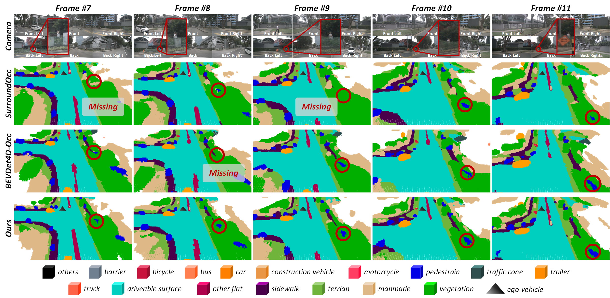
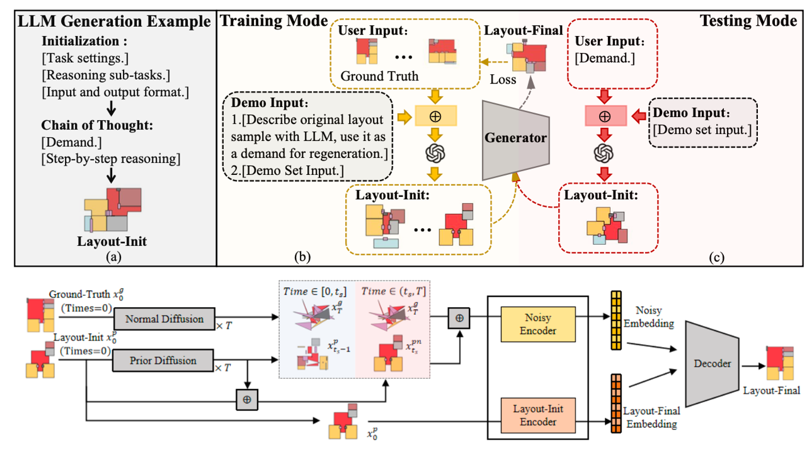
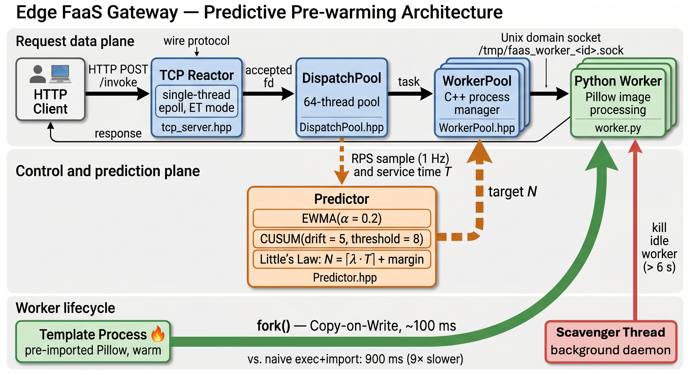
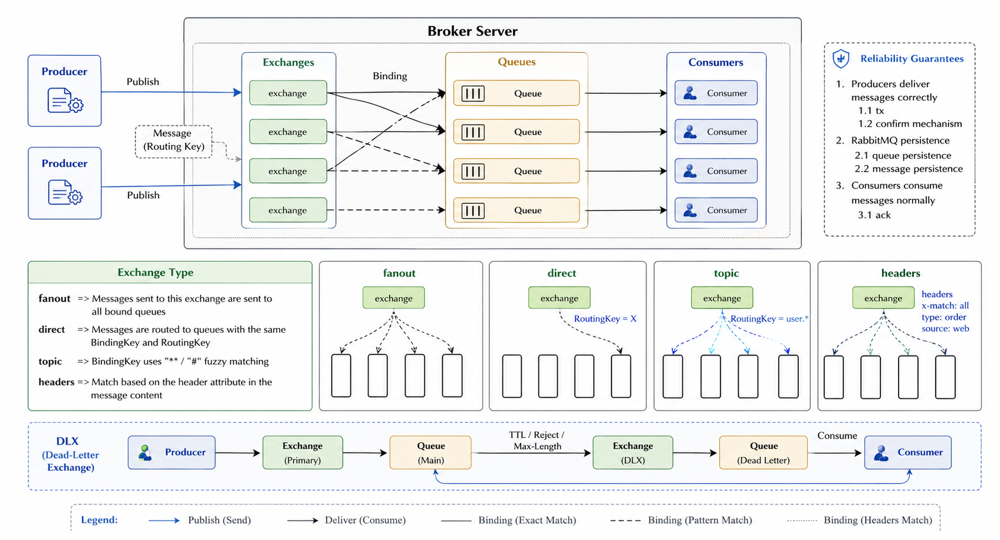
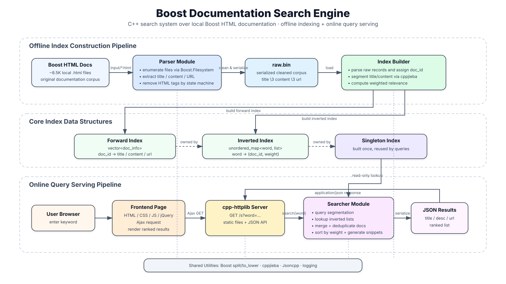

Fengcheng YuM.S. Student in Computer Science3D Scene Understanding · Generative World Models · Reliable Embodied Decision-Making Physical Superintelligence (PSI) Lab University of Southern California Los Angeles, California, United States Email: fyu54107 [at] usc.edu |
Biography
I am an M.S. student in Computer Science at the University of Southern California (USC). I work with Prof. Yue Wang in the Physical Superintelligence (PSI) Lab and Vitor Guizilini at the Toyota Research Institute (TRI) on generative world-action models for autonomous driving. My research studies how intelligent systems can represent, generate, and evaluate dynamic 3D environments — spanning spatiotemporal 3D perception, structured generative models, and geometry-grounded decision-making.
Before joining PSI, I worked with Prof. Ramesh Govindan at USC on real-time mobile sensing for in-vehicle perception. I received my B.Eng. from Sun Yat-sen University in 2025, where I worked with Prof. Guang Tan (谭光) on vision-based 3D occupancy prediction, and earlier with Prof. Calvin Yu-Chian Chen (陳語謙) on AI for medical diagnosis. I also have experience building real-time mobile and C++ systems.
Current Research
Geometry-Grounded Evaluation for Generative World-Action Models
World Models · Geometric Reasoning · Autonomous Driving
Ongoing research · Manuscript in preparation
A geometry-based framework for evaluating and selecting trajectories produced by world-action models, separating learned scene perception from analytically defined safety evaluation. With Prof. Yue Wang (USC PSI Lab) and Toyota Research Institute.
Publications
|
 |
Deflickering Vision-Based Occupancy Networks through Lightweight Spatio-Temporal Correlation Pattern Recognition (PR), 2026. Major Revision Submitted. Fengcheng Yu*, Haoran Xu*, Canming Xia, Ziyang Zong, Guang Tan OccLinker, a plug-in that mines motion from discarded high-frequency frames to correct current-frame predictions. Raises mIoU by up to +3.09 across 4 base occupancy networks at 2.29% added memory, and improves temporal consistency by up to +7.68. |

|
Real-Time Multi-Camera Gaze Tracking for In-Vehicle Perception Manuscript under double-blind review, 2026. Chunyu Xia, Christina Suyong Shin, Fengcheng Yu, Chuan Li, Fan Bai, Harsha V. Madhyastha, Ramesh Govindan A real-time mobile sensing system that synchronizes multiple camera streams to track driver attention under limited hardware resources. |
|
 |
HouseTune: Two-Stage Floorplan Generation with LLM Assistance AAAI Conference on Artificial Intelligence (AAAI'26), 2026. Ziyang Zong, Guanying Chen, Zhaohuan Zhan, Fengcheng Yu, Guang Tan A two-stage pipeline where an LLM drafts the initial layout by chain-of-thought prompting and a conditional diffusion model refines it under physical constraints, without domain-specific training data. |

|
Parkinson's severity diagnosis explainable model based on 3D multi-head attention residual network Computers in Biology and Medicine (CIBM), 2024. Jiehui Huang, Lishan Lin, Fengcheng Yu, Xuedong He, Wenhui Song, Jiaying Lin, Zhenchao Tang, Kang Yuan, Yucheng Li, Haofan Huang, Zhong Pei, Wenbiao Xian, Calvin Yu-Chian Chen MARNet, a 3D multi-head attention residual network pairing attention convolutions with an LSTM backbone to grade Parkinson's severity on the Hoehn-Yahr scale from short smartphone videos of facial expressions. |
* Equal contribution.
Education
|
M.S. in Computer Science Computer Science (CS32) August 2025 - May 2027 | University of Southern California GPA: 3.85/4.0 |
|
|
B.Eng. in Intelligence Science and Technology Intelligence Science and Technology, Computer Science September 2021 - June 2025 | Sun Yat-sen University GPA: 3.9/4.0 |

|
Selected Projects
Systems & engineering projects — C++ infrastructure, distributed services, high-concurrency servers
|
 |
Edge FaaS Cold-Start Mitigation via EWMA + CUSUM Prediction USC CSCI599, Network System for Cloud Computing — Course Project, Prof. Ramesh Govindan A clean-slate, bare-metal C++ FaaS worker targeting cold-start in edge serverless. Uses OS-level copy-on-write process primitives to isolate the prediction algorithm from container/KVM noise; the EWMA + CUSUM predictor runs in O(1) time and memory. |
|
 |
HareMQ Simulation implementation of RabbitMQ core functions A C++ message queue inspired by RabbitMQ. Supports direct/topic/header/fan-out exchanges, message persistence, high availability, and multiple concurrent clients. Tech: C/C++11, Boost, Protobuf, Muduo, SQLite3, Gtest. |
|
 |
Boost Search Engine A search engine implementation based on the Boost library A specialized search engine over the Boost library documentation — data preprocessing, inverted index construction, query processing, and ranked result presentation, with word-frequency scoring and dynamic index updates. Tech: C/C++11, STL, Boost, jsoncpp, cppjieba, cpp-httplib, jQuery. |

|
Load-balanced Online Judge System An online algorithm question-solving service, similar to LeetCode A LeetCode-like online coding and evaluation platform — write, submit, and judge code in the browser with instant feedback. Includes Ace editor integration and a custom load balancer over distributed multi-process/multi-thread judges. Tech: STL, Boost, cpp-httplib, ctemplate, jsoncpp, MySQL C Connector. |

|
Google Tcmalloc Simulation Implementation A high-concurrency memory pool replacing native A simulation of Google's tcmalloc, designed for multi-core servers. Aggregates same-size objects into page-aligned spans to reduce fragmentation and avoid per-core lock contention. Tech: STL, multi-threading, memory management, lock-free programming. |

|
Multi-pattern Logging System Multi-level logging with sync/async modes and pluggable sinks Pluggable output sinks (console, file), thread-safe by design, applying classic OOP patterns throughout. Tech: design patterns (singleton, factory, builder, proxy), producer–consumer, multi-threading, GTest. |

|
Event-Driven Pipeline Communication System Framework An epoll-based event-driven IPC framework Modular structure for easy integration and extension across different environments. Tech: STL, system programming, multiplexing, pipe communication. |
- Dual-Thread-Pool-Based-Pipeline-Communication-System-Framework — Inter-process pipeline communication framework built on dual thread pools. The thread-pool object is highly maintainable and reusable across other projects.
- Reactor-based-HyperWebServer — Hand-rolled epoll server based on a red-black tree, encapsulated into a reactor async I/O multiplexing server capable of high concurrency.
Awards
| Outstanding Student Scholarship, SYSU — 1st Prize 🥇 | 2022 |
| Outstanding Student Scholarship, SYSU — 2nd Prize 🥈 | 2023 |
| Outstanding Student Scholarship, SYSU — 3rd Prize 🥉 | 2024 |
| Academic Competition Scholarship, SYSU | 2022 |
| Arts and Sports Scholarship, SYSU (awarded consecutively) | 2022–2024 |
| 1st Prize, Asia and Pacific Mathematical Contest in Modeling (national-level) | 2022 |
| 2nd Prize, China University Computer Competition — Group Programming Ladder Competition (Guangdong) | 2023 |
| 2nd Prize, "LanQiao" Cup National Software Competition (C/C++) — Guangdong Division | 2023 |
Open Source & Community
Open-source repositories — STL internals, algorithms, systems, and learning notes
- LeetsGoAgain — LeetCode problem-solving journal: solutions with written reasoning and notes, organized by topic and difficulty.
- rookie-cplusplus — STL deep-dive: handcrafted implementations of core containers (string, vector, list, map, unordered_map) and data structures (AVL tree, red-black tree, skip list), along with algorithm library internals.
- rookie-csharp — Reference notes and annotated examples covering C# language fundamentals, written during initial exploration of the language.
- Sequence-Alignment-Machine — USC CSCI570 final project. Compares standard O(mn)-space dynamic programming with Hirschberg's O(m+n)-space divide-and-conquer algorithm for DNA/protein sequence alignment, with empirical analysis of the memory–runtime trade-off.
- NimbusBackup — A cloud backup system that automatically uploads files from a specified local directory to a remote server. Supports browser-based viewing and downloading with HTTP range-based resumable download, and implements a hot/cold file management strategy that compresses infrequently accessed files to reduce disk usage.
- STL-based-Deque-implementation — A from-scratch implementation of
std::dequefollowing the STL design, including the segmented buffer layout and iterator arithmetic. - Reactor-based-HyperWebServer — A high-concurrency web server built on a hand-rolled epoll reactor with red-black tree event management and async I/O multiplexing.
- Dual-Thread-Pool-Based-Pipeline-Communication-System-Framework — An inter-process pipeline communication framework built on dual thread pools, with RAII mutex wrappers, thread object encapsulation, and a reusable
thread_controlcore. - Multiplexing-high-performance-IO-server — Implementations of all three I/O multiplexing models (select, poll, epoll) in C/C++, composable with HTTP/Web servers and other SystemV I/O models.
- NLP-PoetryModels — Experiments on CharRNN-based poem generation with LSTM, GRU, RNN variants, and attention/bidirectional extensions across Chinese, English, and Japanese corpora. Evaluated with Tsinghua BERT-CCPoem and human scoring.
Experience
|
R&D Center Intern Lingzong Technology (Shenzhen) Co., Ltd. July 2024 - September 2024 | Shenzhen, China Conducted in-depth research on advanced occupancy prediction technologies such as SurroundOcc and SelfOcc, focusing on understanding and experimenting with their core functionalities. Researched the mechanism of "multi-head prediction" in occupancy prediction and adjusted the original model structure to enhance accuracy. |
|
Virtualization R&D Engineer Intern Winhong Information Technology Co., Ltd., R&D Department January 2024 - February 2024 | Guangzhou, China Initiated and developed the "virtual machine probe" using Libvmi to monitor KVM architectures effectively. Enhanced VM-to-host interactions through spice-protocol, enabling clipboard sharing and file dragging. Produced detailed documentation on new tools and protocols, significantly improving development and testing efficiency. Established a Confluence workspace for a five-person team. |
|
Backend Development Content Creator CSDN — one of China's largest tech communities October 2021 - Present Selected as a high-quality backend development content creator. Published 150+ technical blogs covering system design, distributed computing, and backend frameworks; received over 420,000 visits; built an engaged community with 8,000+ followers. Selected highly rated columns (posts in Chinese) |